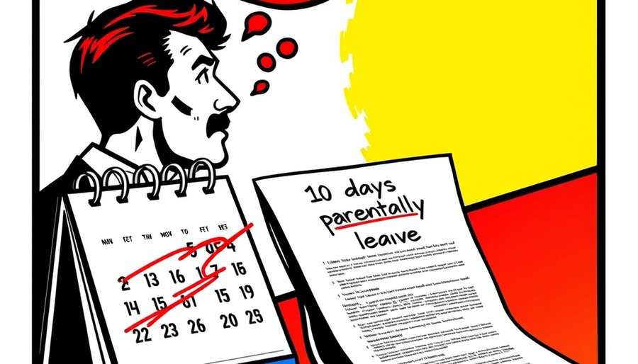

育儿假、陪产假、父母护理假，这几年陆续写进了各省法条。文本清清楚楚：一年几天，谁有资格，工资照发。以育儿假为例，多数省份规定每年五到十天，子女三周岁前有效。陪产假从一周到一个月不等。父母护理假也已在多地落地。
但翻开日历，这些天数很少真的变成休息日。那份问卷里，休过育儿假的受访者平均用了不到一天。更多的职场父母把假条收在抽屉里，从没递出去过。不是法条不让他们休，是他们算了一笔账之后，自己决定不休。
舆论场里每年的讨论都是同一批：休育儿假被边缘化，休完假回来位置没了，休一次绩效评级受影响，之后晋升名单里自动消失。企业很少直接拒绝休假申请。拒绝是违法的，人力部门比谁都清楚。但休假之后发生的事情，法条管不到。排班时你的名字被往后放，绩效面谈时多了一句‘今年投入度不够’，晋升评议时你的材料被轻轻搁到一边。这些动作没有一条写在纸上，但它们比纸上写的任何条款都更能决定一个人敢不敢休假。
于是出现了一个奇怪的账本：法条上，育儿假每年十天，工资照发。日历上，那十天是工作日、是会议、是绩效季。一个部门十几号人，去年休满育儿假的，零。政策写十天，日历上是零天。
假期是权利还是摆设，取决于成本由谁承担。育儿假的制度设计里，账本是这么写的：休假期间工资由企业照发，等于企业替社会政策付费。但企业没有补贴、没有抵税、没有用工替代支持。账本只写了企业该付多少，没写企业付了之后谁来补偿。
这笔账落到企业头上，企业不会自己消化。它会把成本沿着管理链条往下转：转给部门，部门转给团队，团队转给个人。转嫁的工具不是扣工资，是绩效、晋升、排班和机会。一个员工休十天育儿假，企业多付了十天工资却没有对应的产出。在绩效考核表上，这笔成本会变成一句‘产出未达预期’，或者一个比别人低的系数。第二年晋升名单里没有这个人的名字。没有人故意划掉，系统根据绩效分自动排除了他。
把问题归结为老板坏，会漏掉真正的机制。老板可能根本不知道某个员工因为休育儿假被扣了绩效分。扣分的是制度，是KPI，是部门预算。当制度把成本压在谈判能力最弱的一方，表面权利就会变成实质摆设。产假女性面临的隐性就业歧视、三十五岁未婚未育女性的面试困境，源头是同一个：社会政策的成本，由契约中最弱势的一方全额承担。
这和城市规划里分区的代价以通勤形式转嫁给个人是同一个结构。制度决策的成本，最终落到最无力转嫁的人头上。通勤成本、假期成本、生育成本，名字不同，结构一样：都是制度把账记在个人头上，个人把账记在沉默里。
一位在制造业企业做了六年的工程师，去年孩子两岁，他申请了五天育儿假。申请顺利批准，工资照发。年底绩效评估，他的分数比前一年低了一档。主管给他的反馈是‘项目参与度不足’。他查了项目记录，他休假那周正好是一个关键节点，他不在，节点延期了三天。延期没有造成实际损失，但项目考评里，他的贡献权重被调低了。第二年，他没有晋升。
他后来算了一笔账：五天假期，工资照发，大约两千元。晋升失败，每年少收入一万五千元。他没有再申请育儿假。他的妻子也没有。法条上写的十天，在他们家变成了零。
这件事里没有一个环节是违法的。企业批准了假期，支付了工资。绩效评估有数据支持：项目确实延期了，他的参与度确实不足。晋升决策依据绩效排名，程序合规。每一个环节都合法，但连起来之后，一个家庭失去了育儿假，一个员工失去了晋升机会，企业失去了一名有经验的工程师的积极性。所有损失都是隐性的，没有一张报表会记录它们。
制度设计之初，假设企业能够承担假期成本，或者假设市场会自然消化。但市场没有消化，它把成本转嫁给了个人。立法把权利写进文本，市场把成本写回账单，最后买单的是最没有话语权的那个人。
有少数企业，育儿假休得比较顺畅。这些企业有较强的盈利能力，或者当地政府提供了用工补贴、税收优惠。在那些把托育服务嵌入企业福利的地方，育儿假的成本被部分分担了，休假的员工绩效影响就不那么明显。这个对照说明，落实率的关键不在法条写得多细致，而在成本有没有人分担。
一些省份已经开始探索分担机制。有的地方对雇佣育龄女性比例高的企业给予社保补贴，有的地方试点托育服务税收抵扣，有的地方把育儿假期间的工资纳入生育保险基金支付。这些调整的方向是一致的：把原本压在企业头上的成本，部分转移给公共财政或社会保险。
一条假期从入法到真休，中间差的是什么？差的是谁来付账。把账本摊开，问题就清楚了。制度设计里缺了一行成本分担。法条再多，企业再好，只要成本没有分担，权利就很难落地。那一行补上之前，纸上的每一个字都是真的，日历上的每一个零也是真的。账本摊开之后，剩下的问题不是该不该休，是这笔账怎么分。答案不在法条里，在财政预算、社保基金和税收政策里。这些地方的调整，才是育儿假从纸上走到日历上的真正距离。
尾声
育儿假只是制度账本的一个切片。下一篇将转向三十五岁门槛，看年龄如何被制度默认。本文讨论的落实率问题，基于多数省份现行制度设计。个别地区已将育儿假工资纳入生育保险基金支付，落实率有所提升，但全国性分担机制仍在讨论中。
小汪老师的成长观察笔记